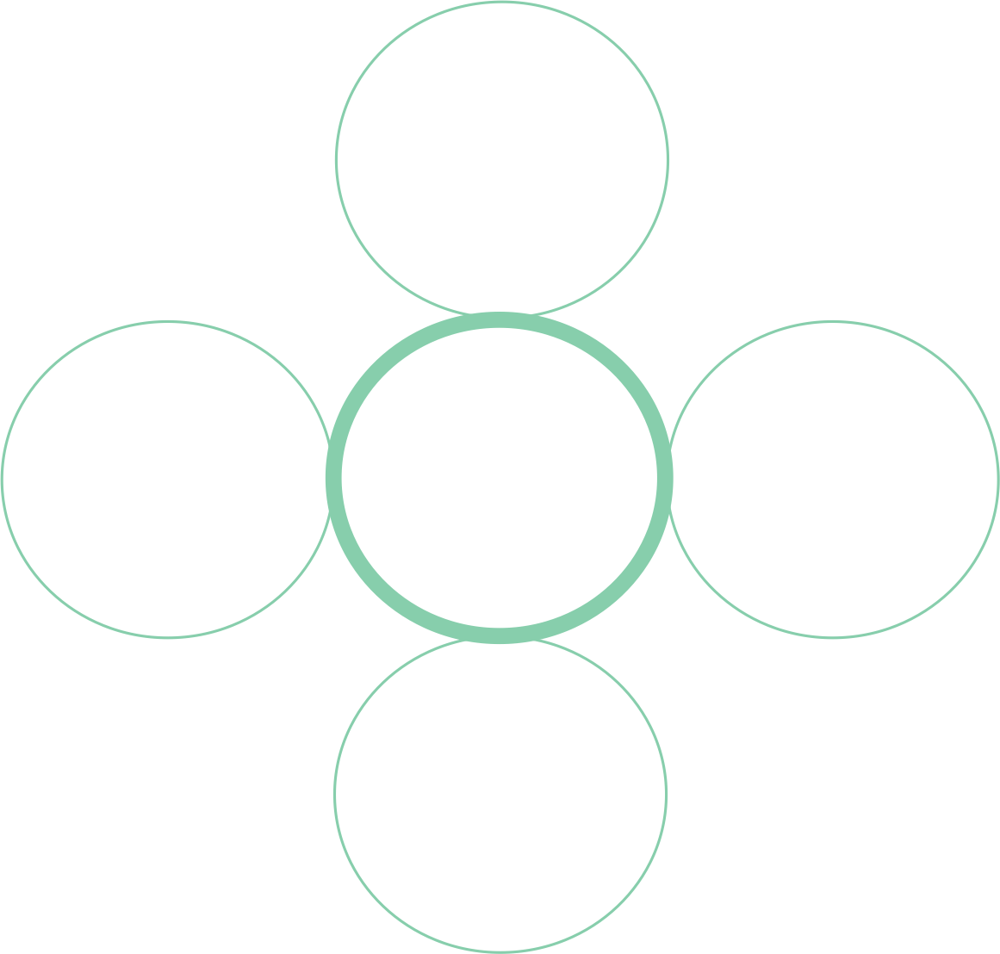
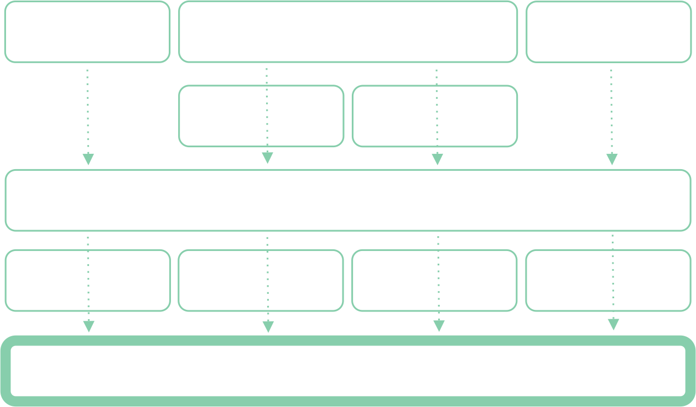

Artificial Intelligence
We used active learning (machine learning) to collect enough tweets (dated 2017 and earlier) that humans such as Mechanical Turk women workers regard as gender harassment. That allowed our AI model to better learn and predict what humans regard as gender harassment language and symbols.
We found roughly 0.04% (4 out of 10,000) tweets are harassment. That implies the need to read through 10,000 tweets to find roughly 4 harassment ones. However, active learning (machine learning) helped us circumvent that obstacle. We first labeled 1K tweets, then used our earliest baseline model (Logistic Regression) to output predicted probabilities on tweets. Below are actual tweets we presented to an audience on 3/15/2017.
[If you prefer not to read what many regard as highly offensive / misogynistic tweets, please bypass the table and text below, and jump to the next diagram.]
While iteratively moving back and forth between data collection and machine learning, we retrained our earliest baseline model on that data, improving its ability to predict probability of harassment on past labeled tweets and new unlabeled tweets. For instance, our earliest model predicted the tweet, “you deserve vagina cancer”, at only 50.6% probability of harassment. As the model learned further, it eventually predicted that tweet with 70%+ probability of harassment. Our "active learning" process. . .

Our data collection process. . .

Our artificial intelligence process. . .
We chose to leverage and tune three categories of models: Gradient Boosting Decision Trees (GBDT), Feed Forward Neural Networks (FNN), and Logistic Regression (LR). GBDT is used by world-class machine learners of companies and /or Kaggle competitions to build patented products or demonstrate best performance. Various neural networks (e.g., feed forward, convolutional, recurrent) have shown the abilities to outperform other models on text-based prediction tasks. And LR is relatively easy to implement and also has a track record of performance.

Rather than taking a predicted probability of harassment from one model, it’s more reliable to take the average predicted probability of harassment across multiple models. Different models can make different prediction mistakes on harassment tweets, but also can compensate for each other. For instance, for specific tweets, two models might predict low probability of gender harassment (incorrectly), whereas six models might predict high probability of gender harassment (correctly).
We used an automated approach that viewed the results of thousands of ensembles -- combinations of models. The graph below shows three separate combinations of our AI models. The combination in the leftmost column is tied to our user-facing products: the Twitter Bot and Gender Harassment Tweets Blocker. Note, our robust approach allows flexibility to replace one ensemble with another ensemble, if users and stakeholders prefer.

As we collect more labeled tweet data via various channels, including through our Gender Harassment Tweets Blocker, our ensemble of models should improve even further.
[Technical Language (Optional): Our final models analyze words, not characters, despite our preference for some models in our ensemble to analyze characters. For instance, we leveraged vectorizer "analyzer='char'" and random search across "n_grams=(1,4)", and some of our initial GBDT models achieved 95%+ precision and 80% recall. However, GDBT feature importances revealed some single characters such as "'" took too much importance in the predicted probability of harassment. So, we concluded a larger dataset than 18.8K is necessary. To be fair and reasonable, we didn't select models with better results but models that both perform well and should generalize to new tweets in the Twitter universe. As revealed in the graph above, we built a sampling distribution to show not only our averages, but our standard errors around those averages. The small standard errors indicate the ensemble's consistent performance across various cross-validation samples of tweets.]
With our combination of 8 models (5 GBDTs, 2 FNNs, and 1 LR), we predicted gender harassment probabilities across a sample of 46.2M tweets. . .

If users collectively tweet an average of 500 million times a day (David Sayce, November 2016; Business Insider, June 2015), our products (if scaled) could have not only detected but acted upon 1 million tweets per week, predicted as gender harassment. In full transparency, that also means our products could have incorrectly flagged about 220,000 tweets per week. On the flip side, the AI underlying our Twitter Bot and Gender Harassment Tweets Blocker can allow more correct predictions currently (if exchanged for lower detection rates of harassment tweets).
Projected number of harassment tweets that our AI could have detected on Twitter's full dataset (3/6/2017 - 4/16/2017)